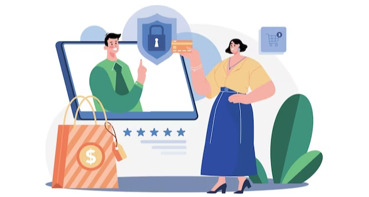
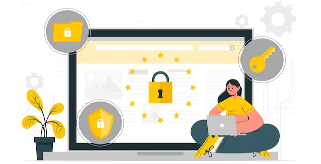

Spear phishing is a complex and ever-evolving threat that businesses must be vigilant against. By educating employees on how to spot and report suspicious emails, using two-factor authentication, and deploying anti-phishing software, businesses can take proactive steps to protect themselves from spear phishing attacks. Taking the time to develop a comprehensive security strategy and keeping up to date on the latest threat intelligence is essential for staying ahead of attackers.
Preventing spear phishing attacks requires a combination of proactive and reactive measures. Organizations should educate their employees on how to spot suspicious emails and how to respond if they feel threatened. Furthermore, organizations should consider deploying advanced security solutions such as malware detection, email filtering, and user authentication solutions to protect their networks from these threats. Taking these proactive measures can help organizations stay one step ahead of the scammers.

In addition to traditional email security solutions like anti-spam and antivirus filters, extra anti-phishing software should be used as well (since spear-phishing emails usually contain no malware and are almost never spam, they often easily bypass traditional security mechanisms).
There are several useful anti-phishing protection techniques you can take advantage of, such as checking for domain spoofing, any instances of impersonation, and flagging questionable content in the email.
While viruses might be delivered via email, they can be spread across your network using gaps in security caused by outdated software. This is precisely why it is fundamental for individual users and organizations to update their security software regularly to build a wall against possible spear-phishing attacks.
Data encryption should be the foundation of your security strategy and is a must-have tool in your arsenal. Encrypting sensitive information essentially makes it impossible for cybercriminals to access data, shutting down or at least weakening their attempts to attack the system.
This data protection method only unlocks sensitive information upon the completion of an authentication process which has two or more steps. It is a means of applying additional security layers and locking confidential information with more than just a password.
DMARC, or Domain-based Message Authentication, Reporting & Conformance, is a technology that helps to evaluate incoming emails against a database of known senders. If an email does not match the information of the sender as recorded in the database, an automatic email is sent to the security admin to notify them.

In the event of a successful attack, you need to get users back to work quickly by getting them access to the latest versions of uninfected files. Having a cloud-based backup solution is critical to keeping users productive during a spear-phishing attack.
Security awareness sessions are vital for employees to identify and divert incoming attacks, particularly at the enterprise level. This training should include spear phishing so employees are equipped with the knowledge to protect the company.
Some email scams, like spear phishing, are becoming more and more sophisticated. If you get an email that looks like it's from someone you know but you're not sure about its intent or content, the best thing to do is to check if the person actually sent the message to you.
On a final note, spear phishing attacks can be prevented by taking the necessary steps to protect your organization. Ensure that all your staff are aware of the cyber threats and the importance of online security. All employees should be trained to recognize and report suspicious emails, and passwords should be changed regularly to maintain security. Additionally, use multi-factor authentication where possible and deploy measures to detect suspicious activities in your network. By taking the right precautions, you can protect your organization from spear phishing attacks.